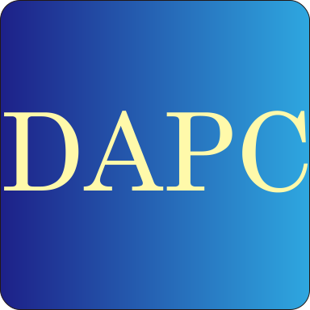

关于DAPC软件
-软件全称：Duyu Audio Processor Core
-软件简称：DAPC (或 dapc)
-软件中文全称：DuYu音频处理器核心程序
-软件功能：简单处理主流格式的音频文件，诸如：变换采样格式，增益衰减，声道混缩，混响回声效果，调整速度与音调，剪切，混合，添加静音，淡入淡出效果，FFT滤波，3D环绕声音效等。
-项目开工时间：2020年05月02日
-项目中使用的第三方软件：Sonic Library, FFmpeg.
Python source code of Duyu Audio Processor Core (DAPC) software system:
Copyright © 2020~2023 DuYu (No.202103180009), Faculty of Computer Science & Technology, Qilu University of Technology.
All rights reserved.
All of the DAPC source code is licensed under the Apache 2.0 license.